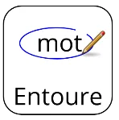
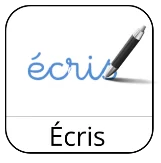

Prénom : ……………………………Date : ……………………………
ROULE GALETTE — je lis

1. J’entoure le vrai titre de l’histoire.Poule GaletteRoule GalletteProule GaletteRoule GaleteRoule GaletteLa Galette
2. J’entoure les mots que l’on trouve dans le texte.
maisongrandeforêtvillagegalettefarinetablemangerchatvieuxjourchaisepetite

3. J’écris les mots qui manquent.
vieillevieuxforêtpetite
Dans une ………………………… maison, tout près de la ………………………… , vivaient un ………………………… et une ………………………… .
vieillegalettefairefarine
La ………………………… pourrait ………………………… une ………………………… , si elle avait de la ………………………… .
4. J’entoure la bonne réponse.
la fôretla forêtla fêrot
la veilleune vieilleune abeille
un vieuxles cieuxmieux
une petite saisonune petite maisonune petite raison
Corrigé
1. Roule Galette
2. maison · forêt · galette · farine · manger · vieux · jour · petite
3.Dans une petite maison, tout près de la forêt, vivaient un vieux et une vieille.La vieille pourrait faire une galette, si elle avait de la farine.
4. la forêt · une vieille · un vieux · une petite maison